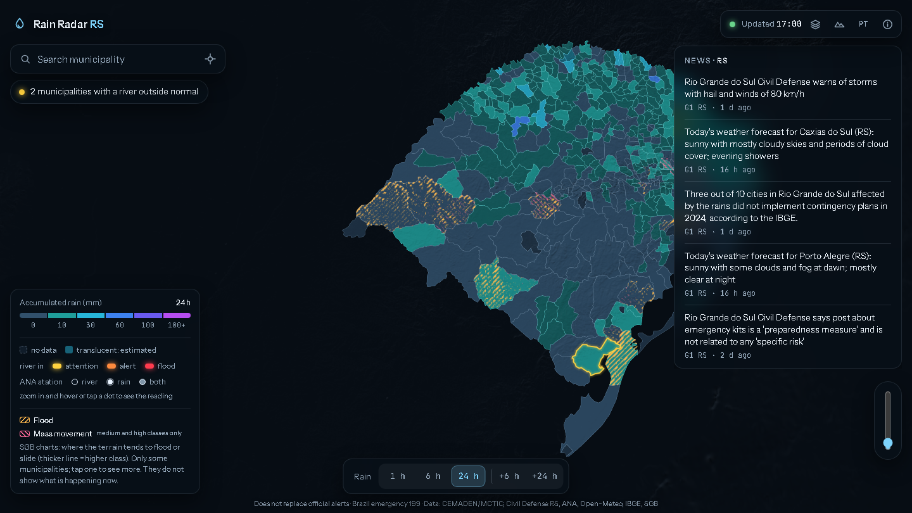

Full Stack Developer · Process automation · System integrations
Lucas de Mélo Berra
I turn manual routines into dependable software: web systems, mobile apps and integrations with the equipment and services a business already runs on, from requirements to production.
Featured · public project · open source
Rain Radar RS - Brazil
Public rainfall and river data in Brazil is scattered across portals that are hard to read. Rain Radar brings the official sources (CEMADEN, Civil Defense RS, ANA) into one map that answers at a glance: how much rain fell in my city, and what is the river doing? Where there is no rain gauge, a model estimate fills the gap and is always labelled as an estimate; missing data is shown as missing, never as "no rain".

Other projects
-
Rejoga
in production · private codeA boardgame marketplace for the Brazilian market: listings, orders, logistics, notifications, support, mediation and an admin dashboard.
React · Tailwind CSS · Node.js · REST APIs · PostgreSQL · Supabase · AWS S3 · Mercado Pago · Melhor Envio
-
Systems for the industrial sector
private codeCustom systems for a manufacturer's daily operation: process automation, QR Code traceability, integration between web systems, scanners and label printers, and mobile apps for floor routines.
Node.js · PHP · Flutter · C++ · Hardware integrations
Experience
-
2022 – 2026
Senior Systems Technician · Industrial sector
Custom solutions for specific departments: process automation, systems integration and maintenance of mission-critical systems used daily.
-
Private project in production
Full Stack Developer · Rejoga
Development and evolution of a boardgame marketplace: front end in React and Tailwind CSS, back end in Node.js with REST APIs, and integrated payments and logistics.
Stack
- Languages
- JavaScript · TypeScript · PHP · Dart · C++ · Python
- Front end and mobile
- React · Tailwind CSS · Flutter
- Back end
- Node.js · Express · REST APIs · FastAPI
- Data and infrastructure
- PostgreSQL · Supabase · Docker · Render · AWS · IIS